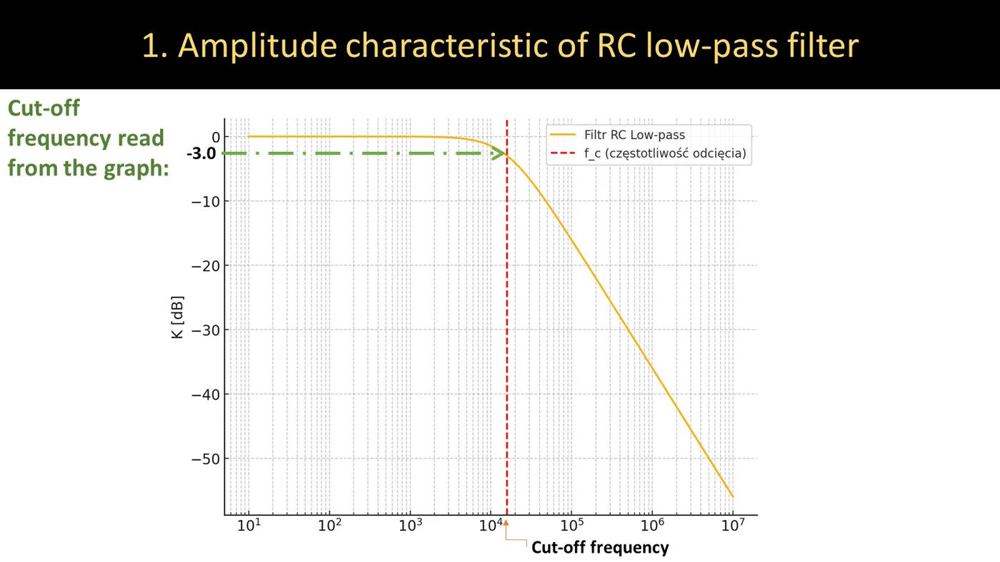
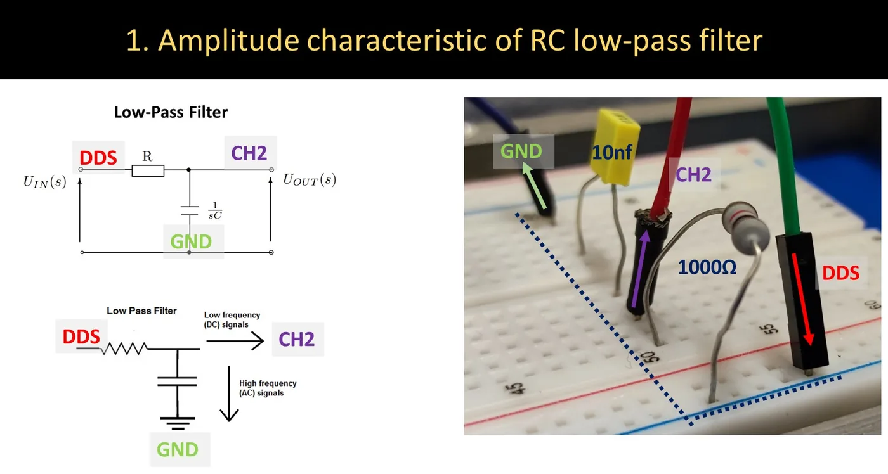
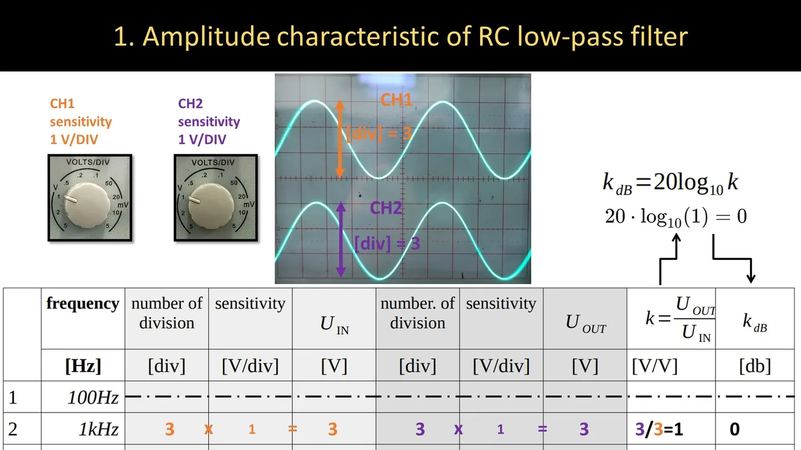
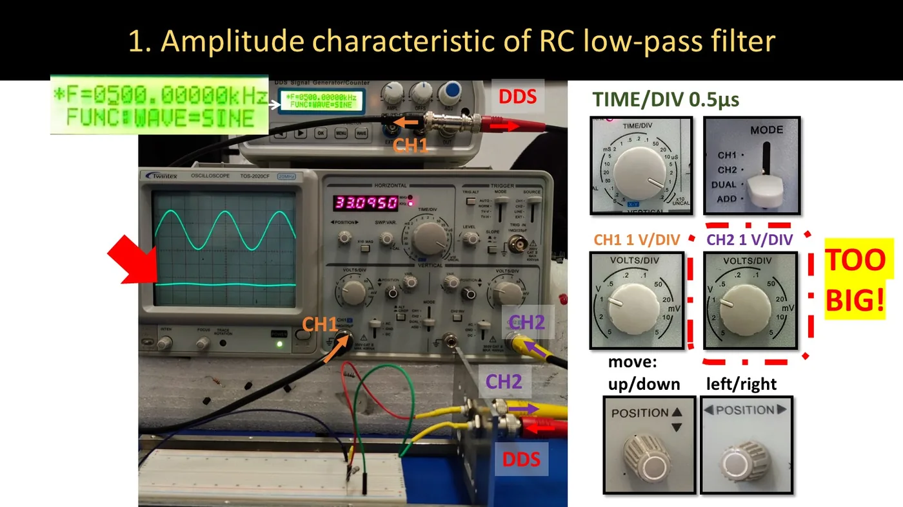
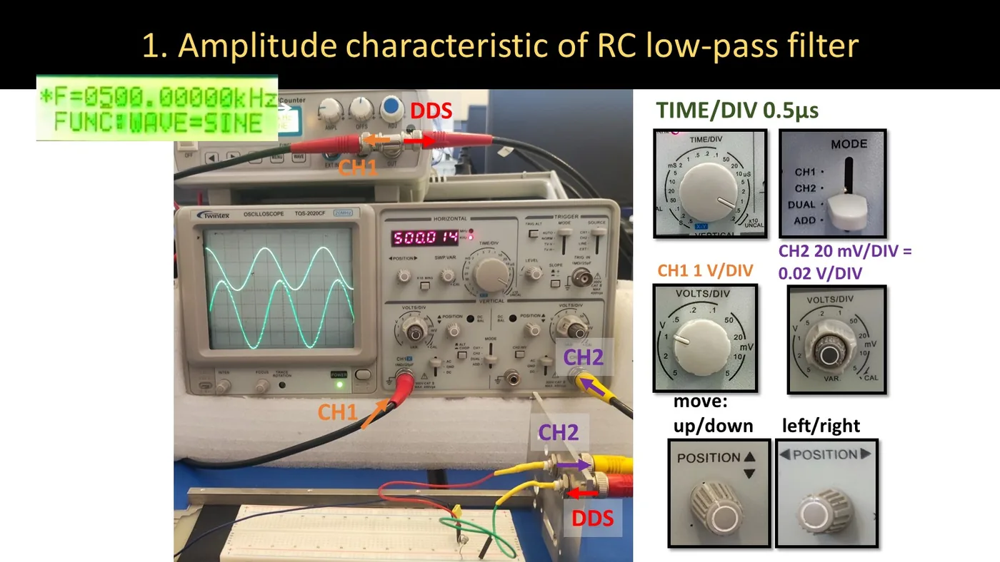
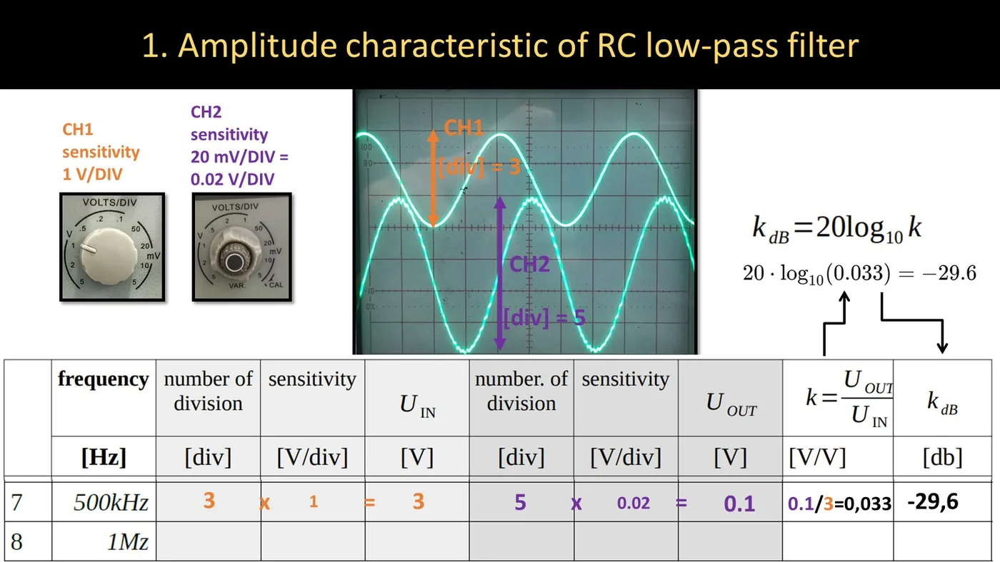
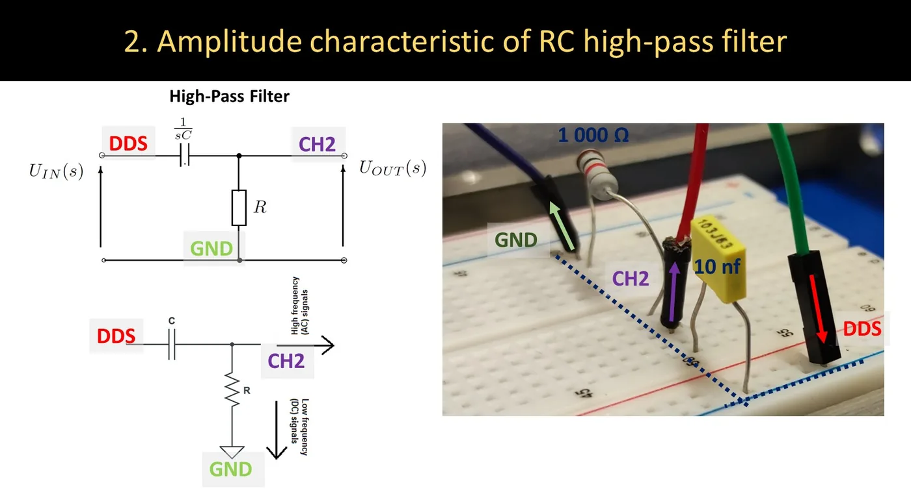
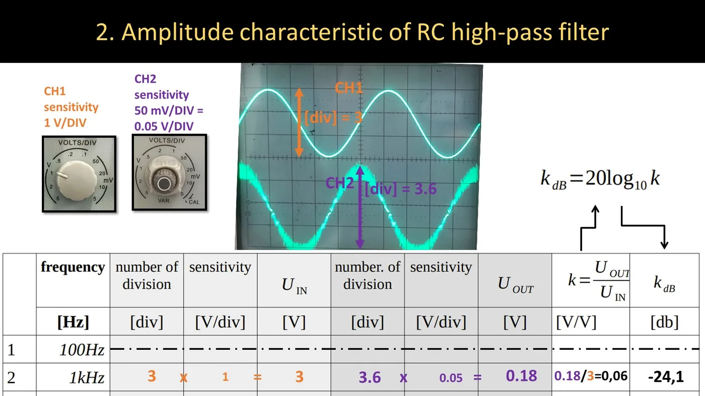
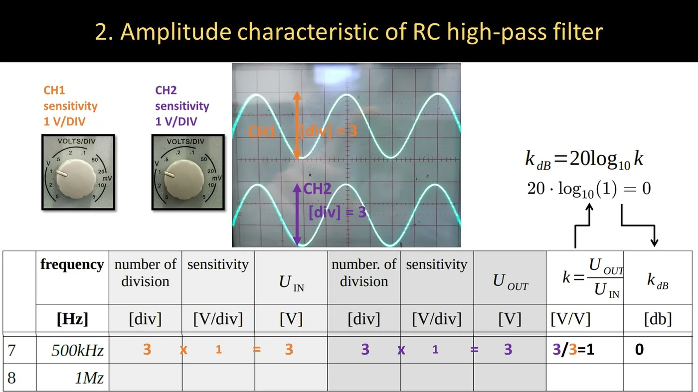
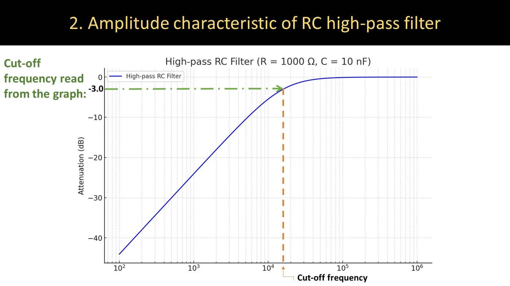

What you need to know before the class
- The voltage divider, the RC filter, decibels, the cut-off frequency — lecture 3 (Quick summary).
- Measuring a peak-to-peak voltage on two oscilloscope channels — lab 3.
- A calculator with a log key (base-10 logarithm).
From lecture 1 (2026/27)
"In the fourth lab we will build filters — RC low-pass and high-pass." And a remark about graphs: measured points are not connected with a zig-zag; a filter characteristic has to be approximated by two straight lines.
The idea
A filter passes some frequencies and attenuates others. To measure that, for every frequency you compare the amplitude at the output with the amplitude at the input:


- Horizontal axis: frequency on a logarithmic scale (10, 100, 1000…).
- Vertical axis: gain in decibels.
- The cut-off frequency fg: where the gain drops by 3 dB (the amplitude is about 70.7% of the maximum).
For both class filters (R = 1 kΩ, C = 10 nF):
Task 1 — the low-pass filter


Building the circuit
- Connect the generator signal (DDS) to one lead of the 1 kΩ resistor.
- Join the other lead of the resistor to the 10 nF capacitor — this is the filter's output.
- Connect the other lead of the capacitor to ground (GND).
- Oscilloscope CH1 — to the input (where the generator is).
- Oscilloscope CH2 — to the output (the point between the resistor and the capacitor).
Measuring one frequency
- Set a sine of the first frequency in the table (100 Hz) on the generator.
- Oscilloscope: MODE → DUAL. Choose TIME/DIV so that you see 2–3 periods (for 100 Hz that is a few milliseconds per division).
- Choose VOLTS/DIV separately for each channel — so that the waveform spans several divisions.
- Count the divisions from trough to peak on CH1 and on CH2.
- Enter in the table: divisions and sensitivity for the input, divisions and sensitivity for the output.
- Compute UIN, UOUT, k and kdB.
- Move on to the next frequency: 1 kHz, 10 kHz, 20 kHz, 50 kHz, 100 kHz, 500 kHz, 1 MHz.


When the output signal "disappears"
At high frequencies a low-pass filter attenuates the signal so strongly that CH2 shows an almost flat line. That is not a fault — you have to increase the sensitivity of CH2 (e.g. from 1 V/div to 20 mV/div).






Examples from the lab materials
Low frequency: CH1: 3 div × 1 V/div = 3 V; CH2: 3 div × 1 V/div = 3 V → k = 3/3 = 1 → kdB = 20 · log 1 = 0 dB.
500 kHz: CH1: 3 div × 1 V/div = 3 V; CH2: 5 div × 0.02 V/div = 0.1 V → k = 0.1/3 = 0.033 → kdB = 20 · log 0.033 = −29.6 dB.
Task 2 — the high-pass filter
The same two components, but swapped: capacitor in series, resistor to ground.


The measurement is identical; only the frequencies in the table differ: 100 Hz, 500 Hz, 1 kHz, 5 kHz, 10 kHz, 50 kHz, 100 kHz, 1 MHz. This time the signal "disappears" at low frequencies.




Examples from the lab materials
Low frequency: CH1: 3 div × 1 V/div = 3 V; CH2: 3.6 div × 0.05 V/div = 0.18 V → k = 0.06 → kdB ≈ −24 dB.
High frequency: CH1: 3 V; CH2: 3 V → k = 1 → 0 dB.
The graph and the cut-off frequency
Step by step
- Draw the axes: frequency horizontally (a logarithmic scale — each next grid step is 10 times more), kdB vertically.
- Plot the eight points with crosses.
- Draw two straight lines: a horizontal one (in the pass band, at 0 dB) and a sloping one (in the stop band).
- Find where the characteristic crosses the −3 dB level and read the frequency — this is the "read" fg.
- Compute fg from the formula — the "calculated" fg. Compare the two.


What to expect — theoretical values for R = 1 kΩ, C = 10 nF
I computed them from the formulas in lecture 3. Your measurements should be similar (differences of 1–2 dB are normal).
| f | Low-pass kdB | High-pass kdB |
|---|---|---|
| 100 Hz | 0.0 | −44.0 |
| 500 Hz | 0.0 | −30.1 |
| 1 kHz | 0.0 | −24.1 |
| 5 kHz | −0.4 | −10.5 |
| 10 kHz | −1.5 | −5.5 |
| 20 kHz | −4.1 | −2.1 |
| 50 kHz | −10.4 | −0.4 |
| 100 kHz | −16.1 | −0.1 |
| 500 kHz | −30.0 | 0.0 |
| 1 MHz | −36.0 | 0.0 |
If your low-pass filter gives −30 dB at 100 Hz, you most likely built a high-pass one (components swapped) or mixed up the channels.
Practice tasks
A different filter than in class: R = 680 Ω, C = 47 nF.
1. Cut-off frequency
Calculate the cut-off frequency of an RC filter with R = 680 Ω and C = 47 nF.
Show solution
fg = 12π · 680 · 47 × 10−9 = 12.008 × 10−4 ≈ 4980 Hz ≈ 5 kHz
2. Fill in three table rows (low-pass filter)
| f | CH1 (input) | CH2 (output) |
|---|---|---|
| 2 kHz | 4 div at 0.5 V/div | 3.7 div at 0.5 V/div |
| 5 kHz | 4 div at 0.5 V/div | 2.8 div at 0.5 V/div |
| 50 kHz | 4 div at 0.5 V/div | 4 div at 50 mV/div |
Compute UIN, UOUT, k and kdB.
Show solution
| f | UIN | UOUT | k | kdB |
|---|---|---|---|---|
| 2 kHz | 2.0 V | 1.85 V | 0.925 | −0.7 dB |
| 5 kHz | 2.0 V | 1.40 V | 0.70 | −3.1 dB |
| 50 kHz | 2.0 V | 0.20 V | 0.10 | −20.0 dB |
At 5 kHz we get about −3 dB — so that is the cut-off frequency (as in task 1). At 50 kHz, a decade higher, it is −20 dB — exactly the 20 dB/dec slope.
3. Decibels both ways
(a) How many decibels is k = 0.25? (b) Which k corresponds to −6 dB? (c) The input signal is 3 V and the filter attenuates by 40 dB. How many volts are at the output?
Show solution
(a) 20 · log 0.25 = −12.0 dB
(b) k = 10−6/20 = 10−0.3 = 0.50
(c) −40 dB is k = 0.01 → UOUT = 3 · 0.01 = 0.03 V = 30 mV
4. The high-pass filter
From the same components (680 Ω, 47 nF) we build a high-pass filter. At what frequency will the attenuation be about 20 dB? And what will it be at 50 kHz?
Show solution
A high-pass filter falls 20 dB per decade below fg, so −20 dB is at fg/10 ≈ 500 Hz.
50 kHz is a decade above fg — the signal passes practically unchanged: about 0 dB.
What costs points most often
- Entering the amplitude of one channel with an unchanged sensitivity — and then getting k > 1 for a passive filter (impossible: a passive filter does not amplify).
- The natural logarithm (
ln) instead of the base-10 one (log). - Forgetting the minus: for k < 1 the decibels are negative.
- Mixing up "mV/div" and "V/div" in the sensitivity.
- Connecting the points on the graph with a zig-zag instead of two straight lines.
- Not adjusting TIME/DIV: at 1 MHz with the setting for 100 Hz you only see a "blurred band".